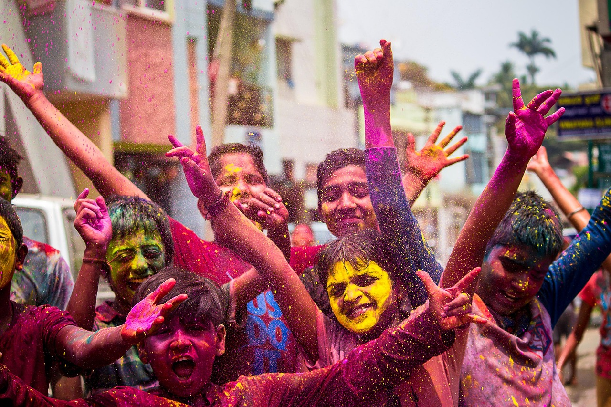
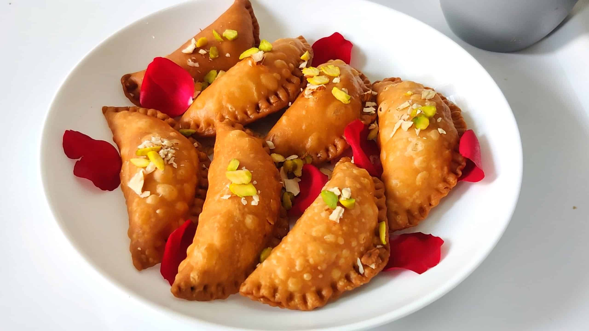
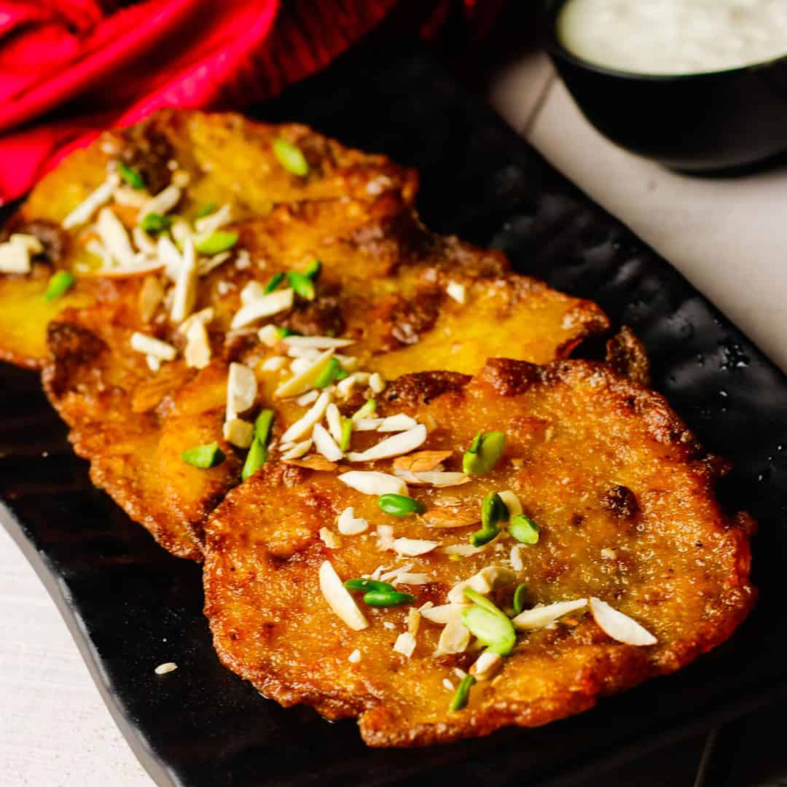

Holi, the Festival of Colors, marks the arrival of spring in India an Nepal. It typically takes place in March, and lasts for two days.
During Holi, people wear white clothing that can be easily stained with colors. Typically, most people wear white kurtas made of cotton, which are comfortable and breathable for the outdoor festivities. However, some people may choose to wear different clothing, such as a Lohri Dress for a more ethnic look. Tie dye shirts have also gained popularity, for those who want to show off color without getting covered in powder.
Holi is celebrated over a wide area with various activities, so the exact customs may vary. However, some common traditions include: Throwing colored powders and water at eachother. Singing, dancing, and sharing festive foods and sweets.
Holi is significant to Hinduism, and celebrates the eternal love of Radha and Krishna. The day also signifies the victory of good over evil, or more specifically, the victory of Vishnu (as Narasimha) over Hiranyakashipu.
Traditional sweets during Holi include Gujiya, a pastry filled with khoya and nuts, and Malpua, a syrup-soaked pancake.
 Traditional foods include Kachori, which is a fried pastry filled with spiced lentils or potatoes. Another option is Dhuska, which is another fried snack made from rice and lentil batter. Generally, the flavors are spicy and savory, providing a nice contrast to the sweet treats.